――― 岡
田 自 観 師 の 論 文 集 ――発行誌別
自観叢書 第１篇～第15篇
| 案内文 信徒各諸氏の待望久しかりし自観大先生御執筆の自観叢書はいよいよ大一篇より刊行開始致しました。一読光明の世界へ誘致する筆力の偉大さに御期待下さい。 |
|||
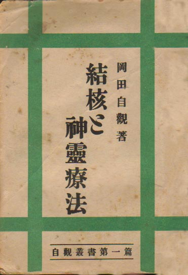 |
第１篇 結核と神霊療法 昭和24年 6月25日発行 Ｂ６版 80P 著者 岡田 自観 発行者 小泉守之助 発行所 日本五六七教会 |
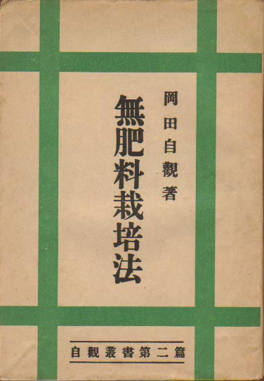 |
第２篇 無肥料栽培法 昭和24年 7月1日発行 Ｂ６版 91P 著者 岡田 自観 発行者 小泉守之助 発行所 日本五六七教会 |
| 案内文 結核は治るといわれながら、現実はなかなか治らないのはどういうわけか、これについてわが神霊療法からみてその原因と必治法を解説して余蘊なし |
案内文 本著が説く無肥料栽培によれば三割ないし五割の増収は確実である、その原理と方法、実験報告は遺憾なく本著に示されてある。 |
||
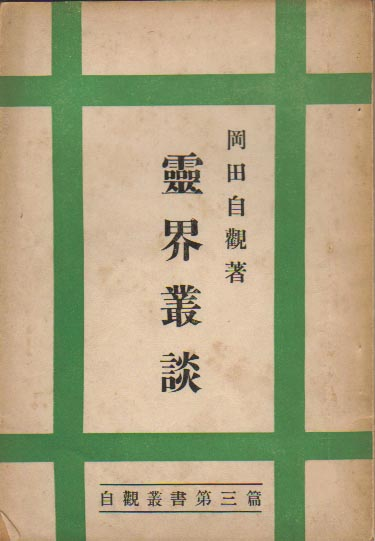 |
第３篇 霊界叢談 昭和24年 10月5日発行 Ｂ６版 77P 著者 岡田 自観 発行人 西山舜之助 発行所 二十世紀出版印刷合資会社 |
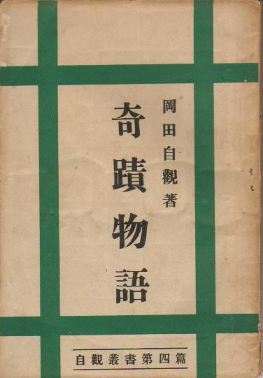 |
第４篇 奇蹟物語 昭和24年 10月5日発行 Ｂ６版 78P 著者 岡田 自観 発行人 西山舜之助 発行所 二十世紀出版印刷合資会社 |
| 案内文 人間の死とは一切の終りとされているが実は死後霊界に往き、霊界生活が始まるのである。生き更り死に代り盡（つ）くるところを知らないのが人間生命である。 |
案内文 この書は明主様御霊験の奇蹟の記録で、信仰を向上さす上の絶好の読物である |
||
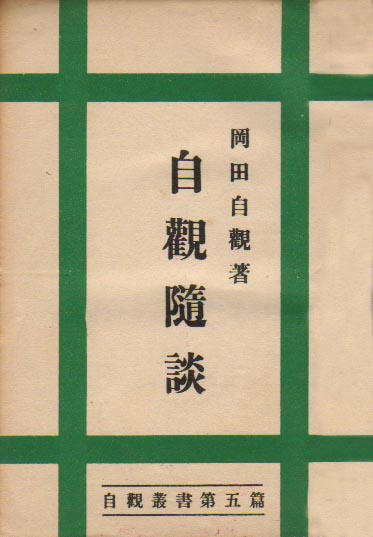 |
第５篇 自観隨談 昭和24年 8月30日発行 Ｂ６版 78P 著者 岡田 自観 発行人 西山舜之助 発行所 二十世紀出版印刷合資会社 |
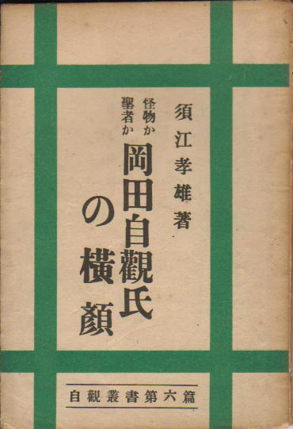 |
第６篇 岡田自観氏の横顔 昭和24年 7月15日発行 Ｂ６版 80P 著者 須江 孝雄 発行者 小泉守之助 発行所 日本五六七教会 |
| 案内文 |
案内文 |
||
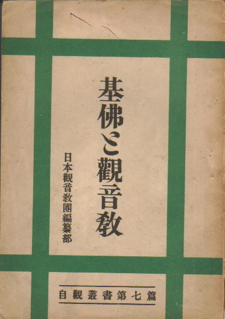 |
第７篇 基佛と観音教 昭和24年 10月25日発行 Ｂ６版 69P 日本観音教団編纂部編 発行人 西山舜之助 編集人 五十嵐一雄 発行所 二十世紀出版印刷合資会社 |
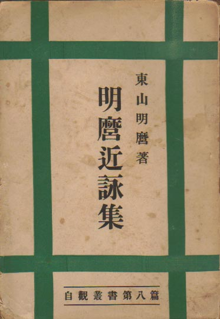 |
第８篇 明麿近詠集 昭和24年 11月30日発行 Ｂ６版 86P 著者 東山明麿 発行者 小泉守之助 発行所 日本五六七教 |
| 案内文 本恭賀地上天国といふ大建設を建つるに当って、その基礎工事ともいうべきものとしての基佛の二大宗教を一応点検する必要があらう。と共に本教が何故現世に生誕されたかを知る必要もあらう。この意味に於て信者未信者を問はず、一読の義務があらう。 |
案内文 之は自観師が明麿の雅号をもって詠まれた歌集で、比較的最近のものである。自観師が宗教家であり乍ら、文藝の方面にも希世の天才である事は、漸く知られて来た。その大自然は元より、人事百般師の芸術眼を通して成った短歌は一躍琴線に触るるものがあろう。 |
||
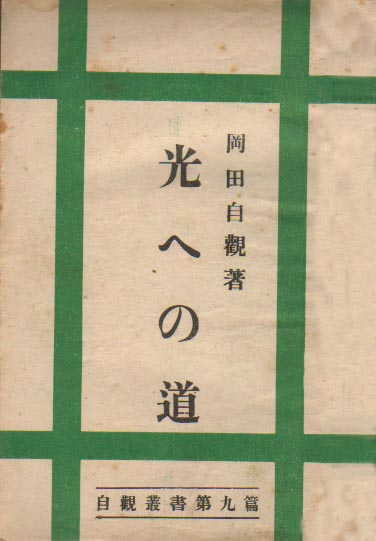 |
第９篇 光への道 昭和24年 12月30日発行 Ｂ６版 69P 著者 岡田 自観 発行者 小泉守之助 発行所 日本五六七教 |
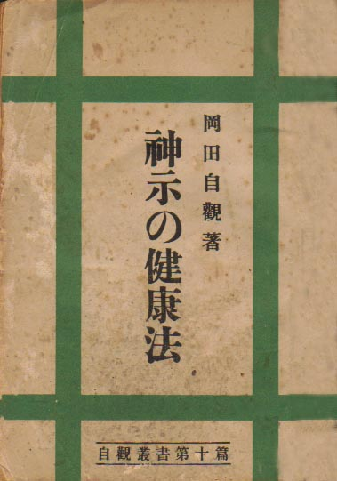 |
第10篇 神示の健康法 昭和25年 4月20日発行 Ｂ６版 72P 著者 岡田 自観 発行者 三尋木光治郎 発行所 救世新聞社出版部 |
| 案内文 之は自観大先生が、信仰の妙諦を覚り得るまでの修行記録である。往昔の開祖聖者と凡そ異色ある経路で、興味津々たる中にと何ものか尊いものを体得さるであろう。 |
案内文 現代人の健康状態が危機に瀕している事は凡ゆる点に表はれている。寄生虫、神経衰弱、結核、腺病質、伝染病等々、凡そ医学の進歩に逆行してる事実で、勿論、此原因は健康法の一大誤謬からである。自観師が発表する神事の健康法こそ此重大問題解決の絶対法である。之を実行するに於て何人と雖も溌剌たる健康者たり得る事は確信する處である。 |
||
| 第１1・１４篇は 予告はあったが 刊行されなかった。 |
第11篇 神示の病理 未刊行 後に「救世教奇蹟集」となったと思われる |
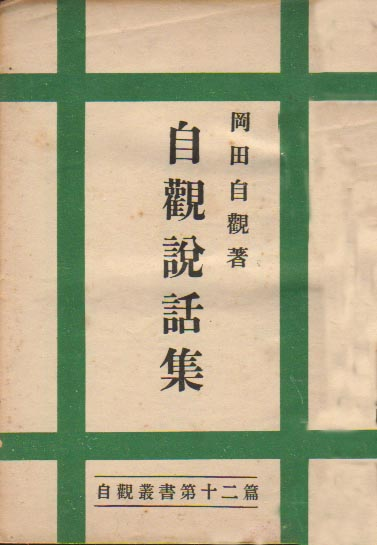 |
第12篇 自観説話集 旧題「自観論文集」 昭和25年 1月30日発行 Ｂ６版 77P 著者 岡田 自観 発行者 小泉守之助 発行所 日本五六七教 |
| 案内文 之は、おかげばなし中の数百に上る、病者の病原経過不治の原因を掌を指すが如く、明確に指摘したもので、如何に事実に即するかを知ると共に、凡ゆる病患の正体を突きとめ得て余蘊なし。病者も病療者も、此書によって開発さるる事蓋し甚大なものがあらう。 |
案内文 之は、信仰雑話の追加篇ともいふべきもので、今日迄、光紙及地上天国に掲載のものより特選し、それに新しいものを加え、全篇、珠玉の文字ならざるはなし。これを読む程に益々信仰の深むを覚える事は言ふまでもない。 |
||
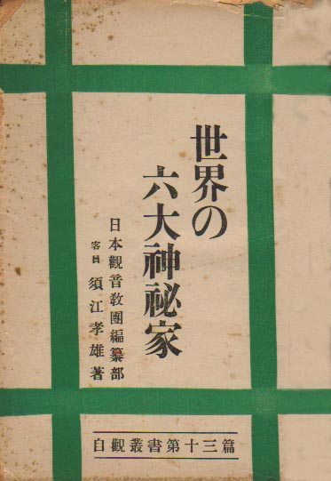 |
第13篇 世界の六大神秘家 昭和24年 12月 5日発行 Ｂ６版 79P 著者 須江 孝雄 発行者 小泉守之助 発行所 日本五六七教 |
第１1・１４篇は 予告はあったが 刊行されなかった。 |
第14篇 天国の花 未刊行 後に「笑の泉」となったと思われる |
| 案内文 此著は、形のみ未信者で心の信者である須江孝雄氏が、自観師と世界の五大聖者との客観的な比較論である。その鋭い筆は自観師の神秘を浮び上がらせると共に、よく肯綮に当ってをり、興味津々たる中に、如何なる聖者も企及し得なかった自観師の救世的一大抱負を語って遺憾なし。 |
案内文 現代世相は誰が見ても、余りにも苦悩に満ちている。之に対し何よりも必要な事は笑いである。大いに笑う事である。笑いによって苦悩を忘れ、活発なる生活力を充実すべきである。此著の如何なる所を読んでも笑いの発しない者はないであらう。 |
||
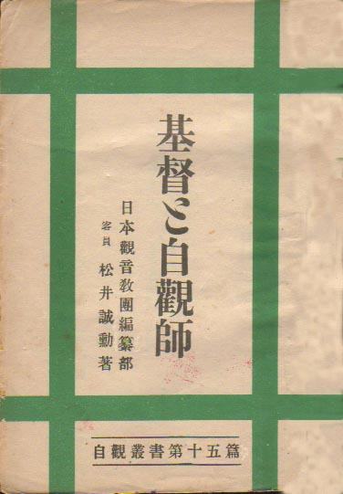 |
第15篇 基督と自観師 昭和25年 1月25日発行 Ｂ６版 77P 著者 松井 誠勲 発行者 小泉守之助 発行所 日本五六七教 |
||
| 案内文 宗教批判家として独自の見解を有する松井誠勲氏は今回基佛と自観師を比較検討し世に問はんとしてなったのが此著である。云うまでもなくキリストは天国は近づけりと云い、自観師は天国を樹立すると云ふ。二千年を隔てて両聖者の言の一致している事に注目すべきであって、実に二十世紀の謎といってもいい。右は偶然か必然か、そこに神霊の連繋を認めない訳にはゆかないであらう。以上の点に鑑み、信仰に関心を持つ限りの者は、一読の義務があらう。 |
|||
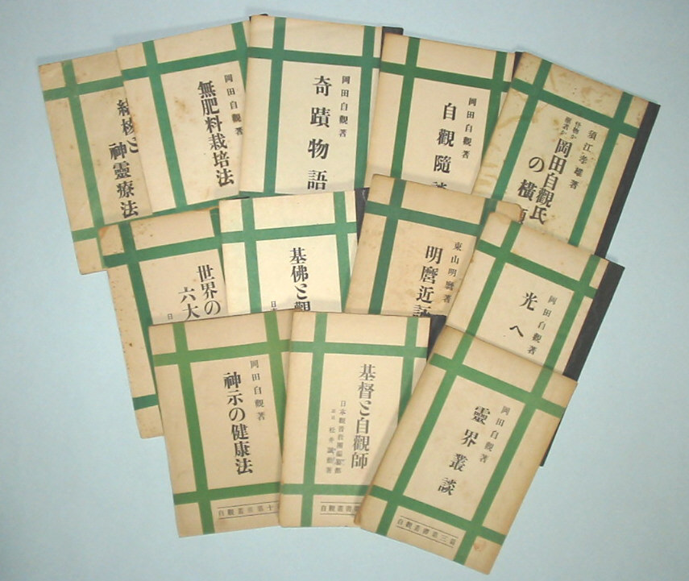 |
|||
ん？一冊足りないような・・・撮影時のミスです。自観説話集が抜けてました |
|||